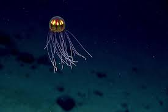

The Mariana Trench is the most extreme and mysterious environment on our planet, a massive crescent-shaped chasm in the floor of the western Pacific Ocean that represents the absolute deepest point on Earth. Plunging down nearly 36,000 feet at its lowest known area, called the Challenger Deep, this trench is so profoundly deep that if you were to drop Mount Everest straight into it, the mountain's peak would still sit more than a mile entirely underwater. Down in this perpetual darkness, the conditions are incredibly hostile; the temperature hovers just a few degrees above freezing, and the hydrostatic pressure is absolutely crushing. At the bottom, that pressure is over a thousand times the standard atmospheric pressure at sea level, which is roughly equivalent to having the weight of fifty jumbo jets piled onto a single person. Yet, despite being a place completely untouched by sunlight and seemingly inhospitable to anything, the trench is far from a barren wasteland. It is actually a thriving, alien world populated by some of the most bizarre and resilient creatures we've ever discovered, from translucent, gelatinous snailfish and glowing jellyfish to microscopic organisms that survive off the chemical-rich vents dotting the ocean floor. We currently have better, more detailed maps of the surface of Mars than we do of the bottom of this immense underwater canyon, making every rare dive into its depths a true journey into the great unknown that forces us to completely rethink the absolute limits of where life can exist.
Reaching this alien world to actually see it firsthand is a logistical nightmare, which is why only a handful of humans have ever made the journey. The very first descent happened back in 1960, when two explorers crammed into a cramped, heavy steel sphere called the Trieste and sank for nearly five hours just to spend twenty minutes at the bottom. Decades later, film director James Cameron made headlines with a solo dive, and modern robotic subs continue to push the boundaries of what we can capture on camera. But even more shocking than the bizarre, glow-in-the-dark wildlife they've filmed is what else currently rests in the Challenger Deep: our own garbage. Even seven miles down, in an environment harder to reach than outer space, submersibles have recorded plastic bags and candy wrappers sitting quietly on the seafloor. It’s a sobering reality check that proves no matter how incredibly remote or hostile an environment is, it’s still deeply connected to the rest of the planet. Exploring the Mariana Trench isn't just about discovering weird new biology or testing out heavy-duty engineering; it's a stark reminder of how far our footprint actually reaches.
